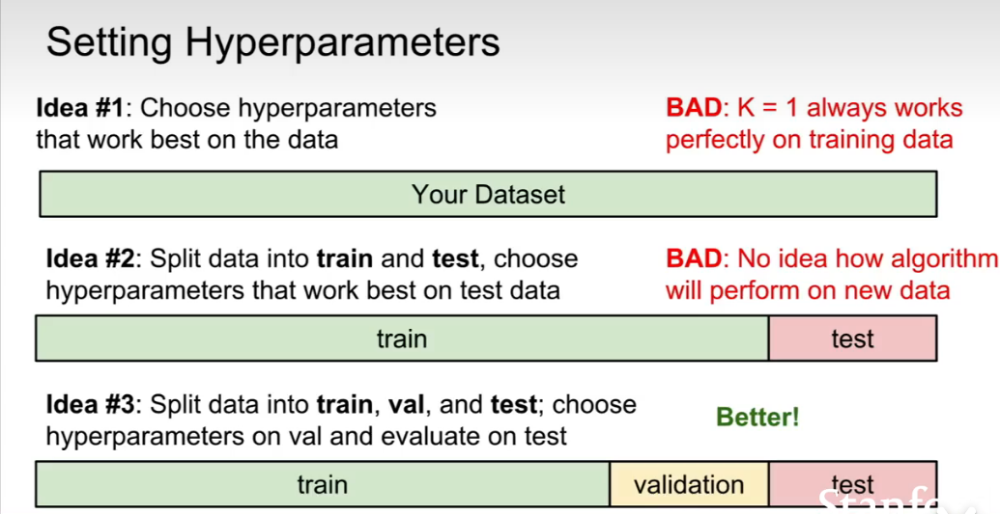
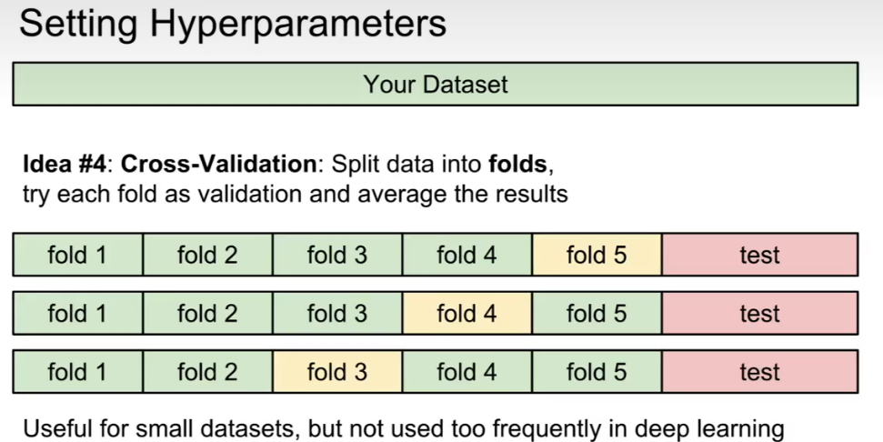
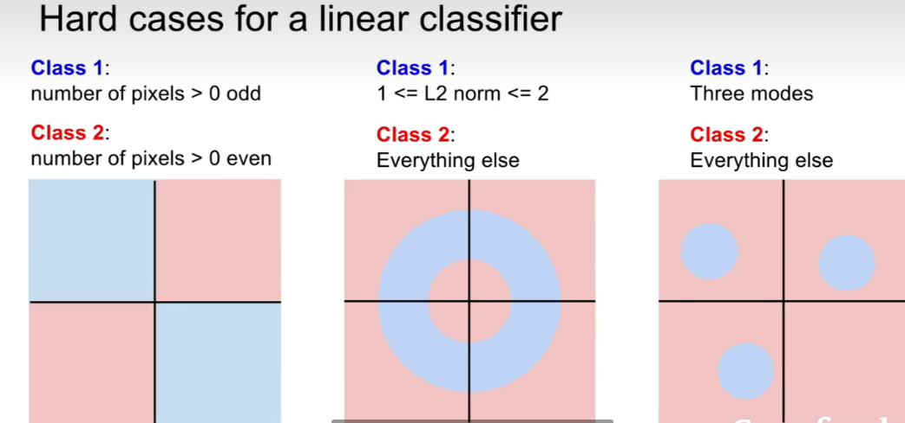

cs231n lec2
图像分类概述
任务：输入图像 标签
挑战：语义鸿沟，算法需要鲁棒性，克服遮挡、视角、光线等等问题
尝试：计算边界，识别耳朵、眼睛等，效果不好
最终，收集大量的数据，训练分类器，利用分类器对目标进行评估，识别。这个过程两个部分：
- train：输入数据和标签，输出模型
- predict：输入模型，做出预测
Nearest Neighbor
train 记住数据和标签，找到最相像的图片，给出预测
数据集：CIFAR10(10 类，50,000 训练图片， 10,000 测试图片)
距离度量：L1 distance: ，即对应像素值计算距离（绝对值），再求和
训练时间短，预测时间长
优化：KNN，从K个最近邻中大多数
L2 distance：
超参数：需要设置算法的一些参数，比如k，比如距离度量
超参数的设置：


线性分类器
, 线性分类器不保留数据，只需要参数，因此效率更高， 的选择在下一讲
比如将图片拉成列向量后与权重相乘，得到每个类别的分数，分数最高的就是预测类别。
让线性分类器低效的数据：

作业
该部分的作业见 作业1-Q1-KNN
本博客所有文章除特别声明外，均采用 CC BY-NC-SA 4.0 许可协议。转载请注明来自 Ruoy's Blog！


评论